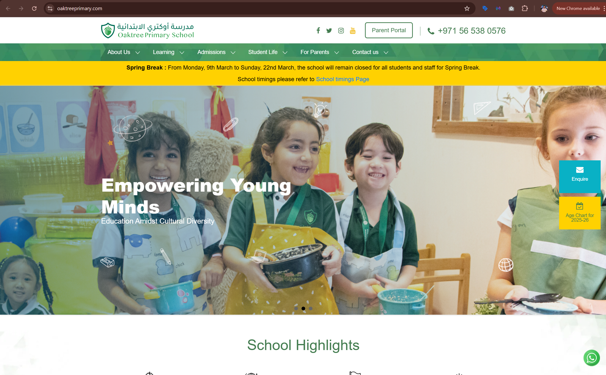
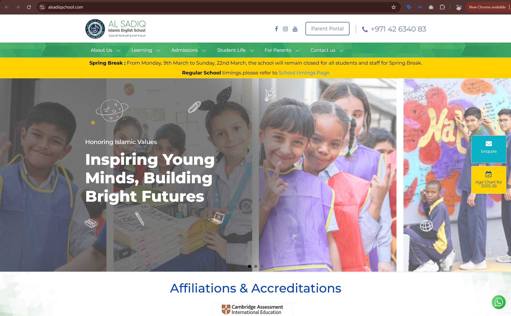
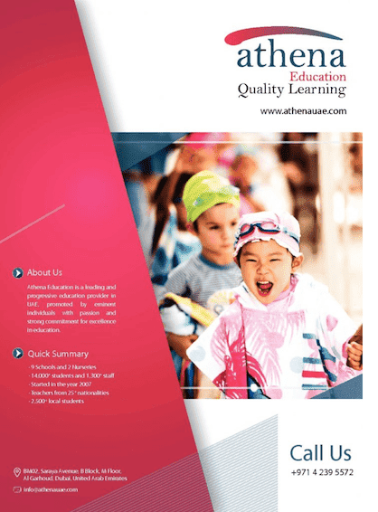

Athena Education
Managing digital marketing, creative production, and web operations across multiple school brands.
At Athena Education, I worked across a multi-school ecosystem covering websites, paid campaigns, SEO, content, analytics, and creative production. My role combined digital marketing execution with hands-on web management and content creation, supporting the group’s digital presence across multiple school brands in the UAE.

Education
Worked within a multi-school education group serving diverse audiences across several school brands.
Marketing across 10+ websites
Managed digital touchpoints across multiple school websites and their supporting marketing assets.
Paid, organic, web, and creative
Worked across Google Ads, social media, SEO, analytics, websites, and multimedia content production.
Better lead generation and digital engagement
The focus was to support admissions marketing, strengthen digital presence, and improve performance across brands.
A multi-brand school group needed consistent digital execution across platforms
This role went beyond running isolated campaigns. Athena Education operated across multiple school brands, which meant marketing activity had to stay coordinated across websites, digital channels, creative assets, and ongoing agency-led lead generation efforts.
The challenge
Supporting several school brands at once meant balancing day-to-day digital execution with broader consistency. Websites needed to stay updated, campaigns needed oversight, performance had to be monitored, and each brand needed a stream of content that felt polished and relevant.
Core responsibilities
- Manage and maintain 10+ school websites
- Support digital lead generation across multiple school brands
- Coordinate with the agency handling campaigns and lead generation
- Monitor website, social, and campaign analytics
- Create graphics, videos, photography, and brochures for digital use
- Support SEO and content improvements across websites
Digital marketing execution with strong web and creative ownership
My role combined campaign support, website management, performance monitoring, and multimedia content creation. It was a hands-on position that sat at the intersection of digital marketing, web operations, and creative production.
Marketing and web operations
- Managed digital marketing initiatives across multiple school brands
- Monitored and supported Google Ads and social media campaigns
- Handled SEO and content improvements across school websites
- Designed, updated, and maintained websites using WordPress and CodeIgniter
Creative and campaign support
- Created social graphics, promotional visuals, and brochures
- Shot and edited videos for schools’ digital platforms
- Produced photography and visual content for marketing use
- Worked with the lead generation agency and tracked campaign performance
Supporting a multi-school digital ecosystem across marketing, websites, and content
The value of this role came from its breadth. I was not only supporting digital campaigns, but also helping maintain the online platforms, creating creative assets, and keeping multiple school brands active across their digital touchpoints.
Website management
Managed and maintained a network of school websites under Athena Education using WordPress and CodeIgniter.
- Updated content and layouts across multiple school sites
- Supported usability, performance, and functionality
- Helped keep school websites current and user-friendly
- Worked across more than ten websites under the group
Campaign support and agency coordination
Supported lead generation efforts by coordinating with the external marketing agency and monitoring performance.
- Worked alongside the agency managing ads and lead generation
- Tracked campaign performance and digital activity
- Helped ensure marketing efforts aligned with school needs
- Supported ongoing optimisation through analytics and feedback
SEO and content support
Helped improve search visibility and content quality across multiple school websites.
- Worked on SEO and content updates for school websites
- Supported rankings through better content structure
- Improved site readiness for organic discoverability
- Maintained content relevance across brands
Videography and video editing
Produced video content for schools’ digital platforms, helping the brands communicate more effectively through visual storytelling.
- Shot promotional and school-related videos
- Edited videos for digital marketing use
- Created content suited for websites and social platforms
- Supported school promotion through multimedia assets
Photography and visual content
Created photography and branded visuals used across schools’ digital channels and promotional materials.
- Captured school-related visuals for online use
- Produced content for social media and websites
- Helped keep school brands visually active
- Supported ongoing content needs across multiple brands
Graphic design and brochures
Designed marketing materials used for institutional communication and brand promotion.
- Created graphics for digital campaigns and social platforms
- Designed brochures and promotional material
- Supported brand communication across schools and head office
- Combined design with practical marketing requirements
What this work changed
This role strengthened the digital consistency of multiple school brands by combining web management, content production, performance monitoring, and ongoing marketing support under one function.
More active digital presence
Multiple school brands benefited from more consistent website updates, digital content, and campaign support.
Stronger creative output
Video, photography, graphics, and brochures helped improve the quality and variety of the group’s digital communication.
Better web and marketing support
Websites, agency activity, and digital channels were supported in a more coordinated way across the school portfolio.
Examples from the workstream
During my time at Athena Education I worked across multiple school brands, producing websites, marketing collateral, and multimedia content used across digital platforms and admissions marketing support.
{kind=link}

School website management
Built and maintained websites for multiple schools under Athena Education using WordPress and CodeIgniter, ensuring performance, usability, and marketing alignment.
{kind=link}

Multi-brand website ecosystem
Managed and updated more than ten school websites, coordinating content, SEO improvements, structure, and ongoing maintenance.

Corporate brochure design
Designed promotional and institutional collateral for the group, combining clean layout, brand communication, and practical marketing needs.

School promotional video
Shot and edited promotional video content used across digital channels to support school branding and engagement.

Digital content production
Produced multimedia content including videography, photography, editing, and visual storytelling for schools’ digital platforms.
What this project says about how I work
- I can manage digital execution across multiple brands within one organisation.
- I work comfortably across websites, campaigns, analytics, and creative production.
- I bring both operational reliability and creative versatility to marketing teams.
- I understand how digital marketing, web presence, and content need to work together.
Want to see another project?
Explore another case study covering logistics, hospitality, healthcare consulting, or real estate performance marketing.